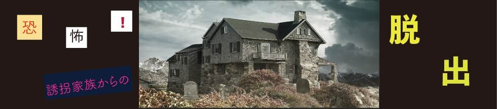

ラストストーリー
「YUKAIKAZOKU写真のウラを見ろ、、、誘拐家族写真のウラを見ろ、、家族写真の裏側をを見ろっていうことか！！！！！！！
確か玄関に写真が飾ってありました。よし、誘拐犯が立ち去った。。見てきます！！！」
全員隠れることができ、なんとか誘拐犯から身をかわした。
みんなN子ちゃんのところへ戻ってくる。
すると、家族写真の裏にはこんなことが書かれていた。
あなたたちがここまでたどり着いて本当に良かった。
私は以前誘拐家族に誘拐されていた者ですが、なんとか自分の力で脱出することができました。脱出には3ヶ月くらいかかってしまいましたが。
あなたたちを誘拐した犯人の正体は、誘拐家族という誘拐を楽しむという恐ろしい家族です。
私がまだ脱出していないとき、誘拐家族はこんなことを言っていました。
このことを警察に言ったら、君と、君の周りの大切な人々がどうなっても知らないぞと。
だから怖くて警察にいうことができなくて、あなたたちを二度目の被害者にしてしまいました。
でも、私が脱出してきたステップを暗号として残すことができれば、次誘拐された人の脱出の手がかりになると思って、いろんな謎解きを散らばせていました。
玄関は厳重なロックがかかっていてここからは脱出できません。
脱出場所は、1階の、廊下にある暖炉です。
暖炉から上に登ることは大変だと思いますが、そこを頑張れば脱出することができます。
最後まで諦めないで！！
脱出の成功を祈っています。

5人は無事脱出し、君が警察であったことが幸い、みんなが脱出した後、誘拐家族の家を特定し、誘拐家族は捕まった。
君は警察としてしっかり役割を果たすことができた。
これからも、その勇気と決断力を活かし、警察としての仕事を全うできるだろう。
それでは、また会おう！
遊んでくれてありがとう！
Special Thanks
リアル脱出ゲームとは
2004年に発表されたネットで爆発的に盛り上がった「脱出ゲーム」を、そのフォーマットそのままに現実世界に移し替えた大胆な遊びが「リアル脱出ゲーム」。マンションの1室や廃校、廃病院、そして東京ドームや六本木ヒルズなど、様々な場所で開催され、2007年に初開催して以降、現在までで累計820万人以上を動員。日本のみならず上海、台湾、シンガポールやサンフランシスコなど全世界で参加者を興奮の渦に巻き込み、男女問わずあらゆる世代を取り込む、今大注目の体験型エンターテインメント。
このゲームの企画者
主な担当
謎制作：清水・霜田
イラスト・画像：木村
サイト：霜田
メンバー：清水・木村・兒子・霜田